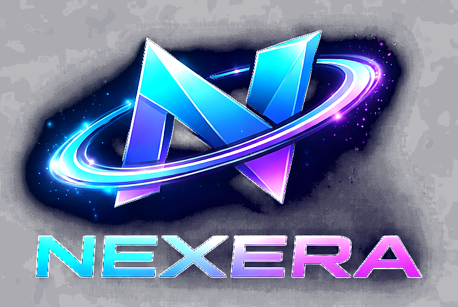

Inteligencia Artificial aplicada
Ayudamos a identificar oportunidades concretas para usar IA dentro de la empresa, con iniciativas viables, seguras y alineadas al negocio.

Tecnología e Inteligencia Artificial para tu empresa
Boutique tecnológica con atención directa, experiencia senior y soluciones adaptadas a la realidad de cada organización.
Desafíos
En Nexera analizamos cada necesidad y proponemos un camino realista, proporcional al tamaño, presupuesto y nivel de madurez de cada organización.
Quiénes somos
Nexera ayuda a pequeñas y medianas empresas a avanzar en su transformación tecnológica mediante consultoría, capacitación e implementación de soluciones de Inteligencia Artificial, automatización y mejora de procesos.
Cada proyecto es acompañado directamente por profesionales con experiencia senior, evitando estructuras innecesarias y manteniendo una comunicación cercana durante todo el proceso.
Cuando un proyecto requiere competencias adicionales, Nexera puede complementar su capacidad mediante especialistas y colaboradores seleccionados según el alcance.
Servicios
Ayudamos a identificar oportunidades concretas para usar IA dentro de la empresa, con iniciativas viables, seguras y alineadas al negocio.
Preparamos a gerencias, jefaturas y equipos para comprender y usar IA de forma práctica, segura y responsable.
Analizamos procesos manuales y diseñamos automatizaciones proporcionales a las necesidades de cada empresa.
Acompañamos decisiones tecnológicas con mirada experta, priorizando lo que genera más valor y mejor ajuste al negocio.
Aplicamos experiencia en calidad, automatización y DevOps para mejorar estabilidad, trazabilidad y capacidad de evolución.
Capacitación en IA
Preparamos a gerencias, jefaturas y equipos para entender y usar Inteligencia Artificial de forma útil, segura y responsable.
Diseñamos talleres y sesiones corporativas que se ajustan al nivel de madurez de cada organización.
Visión práctica para tomar decisiones con criterio.
Uso cotidiano de IA para productividad y apoyo interno.
Buenas prácticas para implementar y acompañar soluciones.
Contenidos ajustados a objetivos reales del negocio.
IA para empresas
Priorizamos iniciativas viables, seguras y alineadas con el negocio.
Diseño e implementación de soluciones para soporte, conocimiento y productividad.
Organizamos información y la conectamos con flujos de uso real dentro de la empresa.
Probamos ideas con alcances pequeños para aprender sin asumir riesgos innecesarios.
Definimos criterios para usar IA con seguridad, trazabilidad y foco en resultados.
Automatización
Analizamos el flujo actual antes de automatizar.
Reducimos fricción en tareas administrativas y operativas.
Conectamos herramientas para que el trabajo fluya mejor.
Ordenamos pasos y responsabilidades para ganar trazabilidad.
Laboratorio de innovación
En Nexera evaluamos ideas y creamos iniciativas enfocadas en productividad, soporte interno, automatización y aprendizaje digital para pymes.
Soluciones para responder consultas, ordenar conocimiento y apoyar equipos.
Experiencias para capacitar y acompañar a equipos con herramientas de IA.
Ideas orientadas a simplificar tareas y mejorar tiempos de respuesta.
Tecnologías
Cómo trabajamos
Conversamos sobre la realidad, los problemas y los objetivos de la empresa.
Definimos qué iniciativas generan más valor y cuáles conviene dejar para después.
Construimos, configuramos o integramos una solución proporcional al desafío.
Revisamos resultados, capacitamos y definimos los siguientes pasos.
Desplegamos mejoras cuando el negocio y la madurez lo permiten.
Por qué Nexera
Nexera acerca experiencia tecnológica senior a pymes que necesitan avanzar sin asumir la complejidad ni los costos de una gran consultora.
Su fundador cuenta con más de 15 años de experiencia en tecnología, calidad de software, QA, DevOps, Release Management, arquitectura, gestión de servicios, transformación digital e Inteligencia Artificial aplicada.
Atención directa, sin capas innecesarias.
Más de 15 años en tecnología y mejora operativa.
Nos adaptamos al tamaño, ritmo y presupuesto de cada empresa.
Priorizamos mejoras que se puedan medir y sostener.
Contacto
Revisaremos tu necesidad para determinar si podemos ayudarte directamente o si requiere capacidades adicionales.